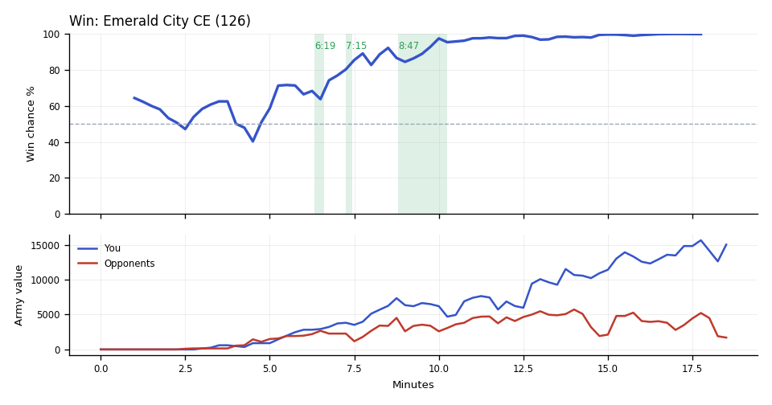

Win. Scallop's Cyclones crushed banana's natural at 9:10, killing workers and town halls, and your army led from there to the end.
Why
9:10–10:00: Scallop's Cyclones and Hellion killed SCVs at banana's natural; banana's workers fell to 27 by 10:05.
15:48–16:02: TakeTheTip's Corruptors went in ahead and killed DDAY's Void Rays and Tempests, leaving DDAY about 500 army value.
16:00: Unseen: DDAY's income was under half of TakeTheTip's, and their army was small when the game ended.
Try next game
TakeTheTip: When a base flashes red on the minimap mid-fight, tap spacebar, pull the Drones away and send Queens. Check: a raid costs fewer than 3 Drones.
Scallop: Whenever a town hall finishes, queue SCVs from it only if you have enough free supply. Check: 64+ workers at 12:00.

Written by claude-sonnet-5-5 from the replay fact sheet.
Win. The game turned at 8:47 when you won a fight (7,775 killed, 7,075 lost).
Team MMR 3751 vs 3593 against DDAY (Protoss), banana (Terran). Starting win chance 64%.
Try next game
Scallop: answer Tempests with Thors/Vikings. Check: at least 8 of those within two minutes of their first Tempest.
Scallop: answer Siege Tanks with Banshees/Liberators. Check: at least 5 of those within two minutes of their first Siege Tank.
TakeTheTip: you had 4,970 unspent at 16:15; add production or a base whenever unspent passes 1,000. Check: under 1,000 at every minute mark after 8:00.
Turning points
6:19–6:36: your army outgrew theirs (2,825→2,925 vs 2,200→2,275). Win chance 68% to 77%.
Army value: yours 2,825→2,925, theirs 2,200→2,275.
What moved the win chance: army +18%, tech -7%
7:15–7:26: you won a fight (1,425 killed, 550 lost). Win chance 80% to 89%.
Fighting: you lost 550 of army at your bases and killed 1,425 of theirs. Going in, your armies were worth 3,825 against their 2,275.
Your losses: 12 Zerglings, 1 Cyclone; killed mostly by Marines (10 kills), Siege Tanks (2).
In your earlier games, when you were 1,025+ ahead on army traded by 11:00, you won 59% (54 games) vs 44% otherwise (110 games).
What moved the win chance: economy +6%
Across the whole game
Enemy Tempests (they made 20) destroyed 9,250 of your value (11 Drones, 10 Roaches, 10 Widow Mines). Counters built after they first struck at 7:51: Scallop made 6 Thors; TakeTheTip made 33 Corruptors, 29 Hydralisks.
Scallop lost 46 Cyclones (11,500) over the game, mostly to Marines (10), Siege Tanks (9).
TakeTheTip had 4,970 unspent at 16:15.
Enemy Siege Tanks (they made 11) destroyed 2,950 of your value (9 Cyclones, 5 Roaches, 4 Zerglings). Counters built after they first struck at 7:16: Scallop made none; TakeTheTip made none.
TakeTheTip lost 63 Roaches (6,300) over the game, mostly to Marines (24), Marauders (20).
Compared with your other games
Scallop had 51 workers at 12:00; in your wins they usually have 64. Across your earlier games, when it was like this you won 20% (41 games) vs 61% otherwise (109 games).
Scallop had been supply blocked for 86s by 10:00; in your wins usually 43s. Across your earlier games, when it was like this you won 25% (36 games) vs 53% otherwise (144 games).
Scallop had 5 bases at 15:00; in your wins usually 6. Across your earlier games, when it was like this you won 40% (57 games) vs 60% otherwise (55 games).
Engine debrief-v3-0.5. Losses count only units killed by an enemy. Win chance comes from a model trained on your earlier games.
Earlier replay bookmarks
Earlier moments to revisit, considering both teammates. Each row groups nearby losses. Engine and chart windows may include other simultaneous losses. Values are minerals + gas. These bookmarks do not grade the decisions.
Local losses: TakeTheTip lost 1 Spore Crawler (75); opponents lost 1 Void Ray (400)
Local losses: Duo lost 0; opponents lost 1 Void Ray (400)
Local losses: Scallop lost 1 Cyclone (250); TakeTheTip lost 12 Zerglings (300); duo total 550; opponents lost 2 Siege Tanks, 2 Medivacs, +8 others (1,425)
Replay map
◎ Historical player start · ◇ Resource cluster · ■ Completed grounded hall · □ Unfinished hall · ✕ Recorded hall ending Dashed rings show recorded events during the selected interval, not simultaneous live state. Symbols and player labels accompany colors.
Hall state
Unplaced halls
Recorded events and source evidenceExact map, registration and resource-site sources
Positive resource-site occupancy is recorded hall presence. Mining, vision, routes, local army availability and map control are unknown. The MMR-conditioned model estimate is unchanged. This panel cannot establish what caused a probability drop.
Older V2 evidence cards
Evidence-first cards are generated independently from the predictive model. Each card separates replay evidence, interpretation, past-only comparison, and an adjustment to test.
Action
TakeTheTip sustained an unspent bank while army investment stayed low
Interpretation
Across 4 sampled checkpoints, TakeTheTip retained a sizeable unspent bank while income stayed above the positive threshold, supply headroom stayed above the threshold, observed live production-structure count was positive, and loss-adjusted current plus in-progress army investment growth stayed low. The live-structure count may include addons, flying structures, or morphing structures; it is infrastructure evidence and does not establish queue occupancy or current training capacity. Cumulative army-loss fields are included so replacement investment is not mislabeled as no conversion. The replay shows an opportunity to test spending timing; it does not show why the bank was held.
Adjustment to test
At a comparable checkpoint next game, set a spending trigger: convert part of the bank into army or in-progress army investment while keeping a small supply buffer, then review the next checkpoint for lower bank and higher investment.
replay_fact TakeTheTip's cumulative combat-army loss value was 2975 at 690s and 5200 at 735s (delta +2225). at 12:15
replay_fact TakeTheTip's current plus in-progress army investment was 4650 at 690s and 2425 at 735s (delta -2225). at 12:15
replay_fact TakeTheTip's income was 3655 at 690s and 3627 at 735s (delta -28). at 12:15
replay_fact TakeTheTip's loss-adjusted current plus in-progress army investment growth was +0 (raw investment delta -2225 plus cumulative army-loss delta +2225; adjusted swing 0). at 12:15
replay_fact TakeTheTip's observed live production-structure count was 3 at 690s and 3 at 735s (delta +0). at 12:15
replay_fact TakeTheTip's supply headroom was 21 at 690s and 57 at 735s (delta +36). at 12:15
replay_fact TakeTheTip's unspent resources was 2054 at 690s and 4638 at 735s (delta +2584). at 12:15
Past-only comparison
7 comparable prior wins; median loss-adjusted current plus in-progress army investment change +1375 at matched clock endpoints. Support: 7. Comparable replay IDs: Multiplayer/Emerald City CE (64), Multiplayer/Emerald City CE (67), Multiplayer/Emerald City CE (69), Multiplayer/Emerald City CE (70), Multiplayer/Emerald City CE (72), Multiplayer/Emerald City CE (76), Multiplayer/Emerald City CE (77).
Provenance
Baseline replay IDs: Multiplayer/Emerald City CE (64), Multiplayer/Emerald City CE (67), Multiplayer/Emerald City CE (69), Multiplayer/Emerald City CE (70), Multiplayer/Emerald City CE (72), Multiplayer/Emerald City CE (76), Multiplayer/Emerald City CE (77)
Retrospective replay-state association; it does not establish causation or what was knowable during play. Cancellations, tech savings, and army position or visibility are not reconstructed from these state totals. Reference windows are one per unique replay/series, strictly earlier than the target, explicit-result wins only, and use endpoints at or before each target endpoint within the configured clock tolerance; this is clock-only context, not a full pre-window state match.
P(win) is an MMR-conditioned model estimate. Economy and Army Position compare the duo to historical positions at similar game times; they are not model-contribution lanes.
Raw State Comparisons
Observed tracker values, not race-normalized scores. Duo and opponent totals are shown alongside TakeTheTip and Scallop so the normalized lanes above can be checked against the underlying army, economy and bank quantities.
Observed Combat Outcomes
Positive bars favor the duo; negative bars favor the opponents. Each bar summarizes the preceding 15 seconds at a sampled boundary; selected-window summaries exclude future events. These observations do not prove the correct alternative decision.
Factual Replay Timeline
These milestones are replay facts synchronized to the selected window. They are context, not claims about what caused the result.